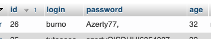
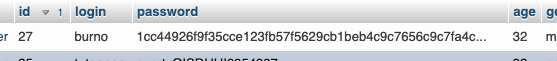

Si votre site permet aux visiteurs de s'enregistrer et de se connecter, vous allez devoir gérer des mots de passe
Cette donnée est l'une des plus sensibles que vous pourriez avoir à stocker
Il est nécessaire de respecter un minimum de sécurité
Nous allons simuler une connexion classique à un site avec email et mot de passe
Inscription / Login
Inscription
(Sans validation par email)
Login
Nous allons nous baser sur une BDD simple (id, email, password)
Créez une base de données et executez la requête SQL suivante
CREATE TABLE `users` (
`id` int(11) NOT NULL,
`email` varchar(250) NOT NULL,
`password` varchar(250) NOT NULL
) ENGINE=InnoDB DEFAULT CHARSET=utf8;
ALTER TABLE `users`
ADD PRIMARY KEY (`id`),
ADD UNIQUE KEY `email` (`email`);
ALTER TABLE `users`
MODIFY `id` int(11) NOT NULL AUTO_INCREMENT;
Dans le cadre de l'exercice, nous allons créer 4 fichiers
Simple connexion à la BDD (pensez à changer DB_NAME et DB_PASS)
<?php
// Session
session_start();
// Connexion variables
define('DB_HOST', 'localhost');
define('DB_PORT', '3306');
define('DB_NAME', 'esin_p2025_passwords');
define('DB_USER', 'root');
define('DB_PASS', '');
$pdo = new PDO(
'mysql:host='.DB_HOST.';dbname='.DB_NAME.';port='.DB_PORT,
DB_USER,
DB_PASS
);
$pdo->setAttribute(PDO::ATTR_ERRMODE, PDO::ERRMODE_EXCEPTION);
$pdo->setAttribute(PDO::ATTR_DEFAULT_FETCH_MODE, PDO::FETCH_OBJ);
Simple redirection vers la page de login s'il n'y a pas de session
<?php
include 'config.php';
if(empty($_SESSION['user']))
{
header('location:login.php');
exit;
}
?>
<!DOCTYPE html>
<html lang="en">
<head>
<meta charset="UTF-8">
<meta name="viewport" content="width=device-width, initial-scale=1.0">
<meta http-equiv="X-UA-Compatible" content="ie=edge">
<title>Private</title>
</head>
<body>
<h1>Private</h1>
<ul>
<li><a href="inscription.php">Inscription</a></li>
<li><a href="login.php">Login</a></li>
<li><a href="private.php">Private</a></li>
<li><a href="disconnect.php">Disconnect</a></li>
</ul>
<p>Hello <?= $_SESSION['user']['email'] ?></p>
</body>
</html>
Ajout dans la BDD si le formulaire est envoyé
Pas de mot de passe de confirmation ni de gestion d'erreur
<?php
include 'config.php';
$message = '';
if(!empty($_POST))
{
$email = $_POST['email'];
$password = $_POST['password'];
$prepare = $pdo->prepare('INSERT INTO users (email, password) VALUES (:email, :password)');
$prepare->bindValue('email', $email);
$prepare->bindValue('password', $password);
$prepare->execute();
$message = 'User registered';
}
?>
<!DOCTYPE html>
<html lang="en">
<head>
<meta charset="UTF-8">
<meta name="viewport" content="width=device-width, initial-scale=1.0">
<meta http-equiv="X-UA-Compatible" content="ie=edge">
<title>Inscription</title>
</head>
<body>
<h1>Inscription</h1>
<ul>
<li><a href="inscription.php">Inscription</a></li>
<li><a href="login.php">Login</a></li>
<li><a href="private.php">Private</a></li>
<li><a href="disconnect.php">Disconnect</a></li>
</ul>
<p><?= $message ?></p>
<form action="#" method="POST">
<div>
<input type="email" name="email" id="email">
<label for="email">Email</label>
</div>
<div>
<input type="password" name="password" id="password">
<label for="password">Password</label>
</div>
<div>
<input type="submit">
</div>
</form>
</body>
</html>
Ajout dans la BDD si le formulaire est envoyé
Pas de mot de passe de confirmation ni de gestion d'erreur
<?php
include 'config.php';
$message = '';
if(!empty($_POST))
{
$email = $_POST['email'];
$password = $_POST['password'];
$prepare = $pdo->prepare('SELECT * FROM users WHERE email = :email LIMIT 1');
$prepare->bindValue(':email', $email);
$query = $prepare->execute();
$user = $prepare->fetch();
if(!$user)
{
$message = 'Email not found';
}
else
{
if($user->password === $password)
{
$message = 'You are now logged in';
$_SESSION['user'] = [
'email' => $user->email,
];
}
else
{
$message = 'Wrong password';
}
}
}
?>
<!DOCTYPE html>
<html lang="en">
<head>
<meta charset="UTF-8">
<meta name="viewport" content="width=device-width, initial-scale=1.0">
<meta http-equiv="X-UA-Compatible" content="ie=edge">
<title>Login</title>
</head>
<body>
<h1>Login</h1>
<ul>
<li><a href="inscription.php">Inscription</a></li>
<li><a href="login.php">Login</a></li>
<li><a href="private.php">Private</a></li>
<li><a href="disconnect.php">Disconnect</a></li>
</ul>
<p><?= $message ?></p>
<form action="#" method="POST">
<div>
<input type="email" name="email" id="email">
<label for="email">Email</label>
</div>
<div>
<input type="password" name="password" id="password">
<label for="password">Password</label>
</div>
<div>
<input type="submit">
</div>
</form>
</body>
</html>
Détruire la session
<?php
include 'config.php';
session_destroy();
?>
<!DOCTYPE html>
<html lang="en">
<head>
<meta charset="UTF-8">
<meta name="viewport" content="width=device-width, initial-scale=1.0">
<meta http-equiv="X-UA-Compatible" content="ie=edge">
<title>Disconnect</title>
</head>
<body>
<h1>Disconnect</h1>
<ul>
<li><a href="inscription.php">Inscription</a></li>
<li><a href="login.php">Login</a></li>
<li><a href="private.php">Private</a></li>
<li><a href="disconnect.php">Disconnect</a></li>
</ul>
<p>Vous avez été déconnecté</p>
</body>
</html>
Les mots de passe sont sauvegardés en clair

N'importe quel individu ayant accès à la base de données (administrateur ou hacker) pourra voir le mot de passe de chaque utilisateur
Plusieurs utilisations possible pour un hacker
La solution consiste à hasher le mot de passe pour le rendre méconnaissable
À l'inscription, nous allons hasher le mot de passe avant de l'enregistrer dans la BDD
Un individu ayant accès à la BDD ne connaîtra pas le mot de passe d'origine
Au login, nous allons hasher le mot de passe et le comparer à celui sauvegardé en BDD (qui est déjà hashé)
Si les deux sont identiques, c'est le bon mot de passe
Pour cela nous allons utiliser la fonction hash()
echo hash('sha256', 'monmotdepasse');
// Ce qui affichera
// a7af71ad2b0ce07c36781ab7c8a6d36bd703824c22647f85d6de62063b219bc6
Un même algorithme avec une même chaîne de caractères renvera toujours le même résultat
echo hash('sha256', 'azerty'); // f2d81a260dea8a100dd517984e53c56a7523d96942a834b9cdc249bd4e8c7aa9
echo hash('sha256', 'azerty'); // f2d81a260dea8a100dd517984e53c56a7523d96942a834b9cdc249bd4e8c7aa9
echo hash('sha256', 'azerty'); // f2d81a260dea8a100dd517984e53c56a7523d96942a834b9cdc249bd4e8c7aa9
echo hash('sha256', 'azerty'); // f2d81a260dea8a100dd517984e53c56a7523d96942a834b9cdc249bd4e8c7aa9
Il existe de nombreux algorithmes de hash
Certains sont lents, certains peuvent être décryptés (md5 et sha-1)
SHA-256 est rapide, populaire et n'a jamais été décrypté
Nous hashons le mot de passe avant de l'enregistrer dans la BDD
// ...
$password = hash('sha256', $_POST['password']); // Hash
// ...
Et nous hashons également le mot de passe envoyé par le formulaire de login
// ...
$password = hash('sha256', $_POST['password']); // Hash
// ...
Si l'utilisateur a bien fourni le même mot de passe, les deux hash (celui formulaire de login et celui enregistré en BDD) seront identiques
À aucun moment, nous enregistrons de mot de passe en clair

☝️ Pensez à vider la table user et en recréer un nouveau
Hasher, c'est pas mal, mais insuffisant
Une rainbow table contient une grande quantité de mots de passes "classiques" et leurs versions hashés
Si le visiteur a utilisé un de ces mots de passe, il sera facile de le retrouver dans la rainbow table à partir de la version encryptée
Nous allons rajouter quelques caractères au mot de passe pour être certain qu'il n'existe pas dans les rainbow tables
Le mot de passe azerty deviendra par exemple 76t!"ed#azerty
Cette technique s'appelle le salage (salt)
Nous créons une variable globale contenant le salt
// ...
// Salt
define('SALT', '76t!"ed#');
// ...
Nous rajoutons le salt au mot de passe avant de le hasher et de l'enregistrer dans la BDD
// ...
$password = hash('sha256', SALT . $_POST['password']); // Hash + salt
// ...
Et nous le rajoutons également au mot de passe envoyé par le formulaire de login
// ...
$password = hash('sha256', SALT . $_POST['password']); // Hash + salt
// ...
☝️ Pensez à vider la table user et en recréer un nouveau
Si le hacker accède au scripts PHP, il pourra récupérer le SALT et regénérer l'intégralité de la rainbow table en prenant en compte ce SALT
La solution consisterait à avoir un SALT différent pour chaque utilisateur
Le hacker pourra toujours régénérer la rainbow table puisqu'il connaitra le salt, mais comme ce salt sera différent pour chaque utilisateur, il devra regénérer la rainbow table pour chaque utilisateur
Ce salt peut être généré en créant une chaine de caractère aléatoire ou alors en hashant une donnée unique de l'utilisateur tel que son email
// ...
$salt = hash('md5', $email . SALT);
$password = hash('sha256', $salt.$_POST['password']);
// ...
Ce n'est pas tant une solution qu'une technique pour ralentir et dissuader le hacker
Depuis un certain temps, PHP intègre deux nouvelles fonction s'occupant du hash et du salt
Nous allons choisir PASSWORD_DEFAULT comme algorithme qui utilisera l'algorithme par défaut du serveur (en général bcrypt)
// ...
$password = password_hash($_POST['password'], PASSWORD_DEFAULT);
// ...
Il ne faut ni saler, ni hasher le mot de passe nous-même
// ...
$password = $_POST['password'];
// ...
if(password_verify($password, $user->password))
// ...
☝️ Pensez à vider la table user et en recréer un nouveau